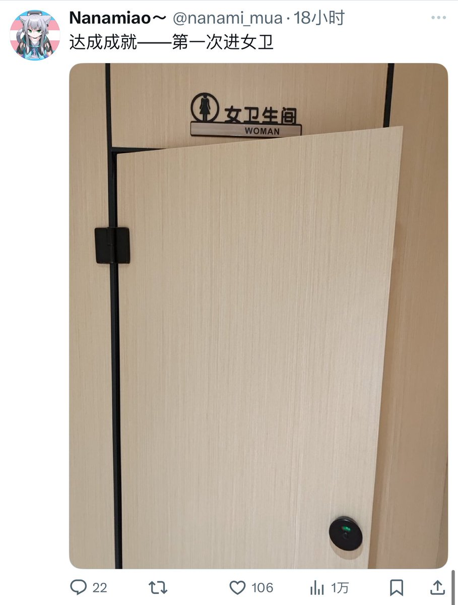
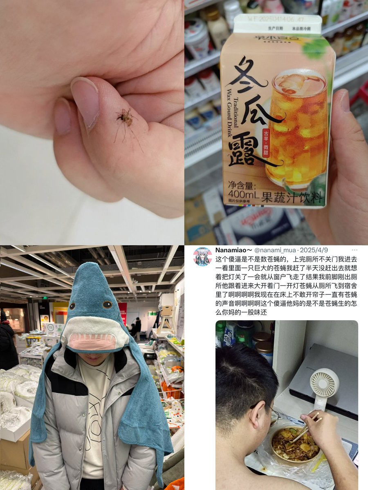

青石巷🍃🕊️
@qingshixiang258
@1965chich 很多跨觉得被当成男性很冒犯，但是她们从来都不管进女厕所厕所里的人有没有感觉到冒犯


Kentucky Fried Chicken
@1965chich
推主nanami_mua
记录了他第一次进入女卫生间的照片
右图为他的日常照片，我并没有看出任何女性特征，只看到了一个手肥肥的明目张胆进女卫生间拍照还以此作为炫耀的男人，右图4为他的室友，看图我们可以明白一件事情。就是这位博主的身份信息还为男性.... https://t.co/Qzi77vZ4E4